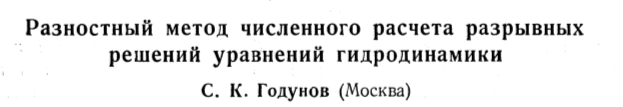

"A shockwave is a surface of discontinuity
propagating in a gas at which density
and velocity experience abrupt changes."
Zemplén, 1905
Natura non facit saltus.
(Nature does not make jumps.)
~Lucretius, Newton, Leibniz, Darwin, ..., etc.
In the 1700s, the first wave equation was studied by d'Alembert, Euler, and Lagrange among others,
$$\frac{ \partial^2 u}{\partial t^2} = c^2 \frac{\partial^2 u}{\partial x^2} $$
which has solution
$$ u(x,t) = f(x-ct)+g(x+ct) $$
A century later, compressible flows were studied by
Hugoniot, Poisson, Rankine, Rayleigh, and Stokes.
The compressible flows they studied were similar to the Euler equations, $$ \mathbf{u}_t + \mathbf{f}(\mathbf{u})_x = 0 $$ or expanded as $$ \frac{\partial}{\partial{}t} \left[ \begin{array}{ccc} \rho{} \\ \rho u \\ E \end{array} \right] + \frac{\partial}{\partial x}\left[ \begin{array}{ccc} \rho{} u \\ \rho{}u^2 +p \\ \rho u H \end{array} \right] = \mathbf{0}, $$ with $H = \frac{E+p}{\rho}$ and from the ideal gas law, $p = (\gamma-1)\left(E-\frac{1}{2}\rho u^2\right)$
A Discontinuous Solution
Integrating the equations and assuming a discontinuous solution yields the jump conditions, $$\Delta \mathbf{f} = S \Delta \mathbf{u}$$ That is, given the left preshock state $\mathbf{u}_L$ and the postshock density, $\rho_R$, the right pressure and velocity can be computed from \begin{eqnarray*} \frac{p_R}{p_L}&=&\frac{(\gamma+1)\rho_R-(\gamma-1)\rho_L}{(\gamma+1)\rho_L-(\gamma-1)\rho_R}\\ u_R-u_L&=&(p_L-p_R)\sqrt{\frac{2}{\rho_L\left((\gamma-1)p_L+(\gamma+1)p_R\right)}} \end{eqnarray*} Taking $\rho_R > \rho_L$ results in the physical Hugoniot curve, and $\rho_R < \rho_L$ results in the nonphysical Hugoniot curve.
A Discontinuous Solution
Even with this solution, the picture is incomplete. In reality, a shock has a finite width, coming from the physical viscosity not present in the governing equations.

"... It does not follow that the discontinuous motion considered can ever take place in nature ... It appears, then, almost certain that the internal friction would effectively prevent the formation of a surface of discontinuity..." - Stokes, 1848
Numerical Shockwaves
(Emmons, 1940s)
Emmons assumed the idealized shock, underestimating the width.
This was the start of shock-fitting.
Numerical Shockwaves
(von Neumann, Richtmyer, 1949)

Artificial viscosity was introduced to give shocks an internal structure whose length scale was that of the grid size, overestimating the width.
This was the start of shock-capturing.
Godunov's Method
(Sergei Godunov, 1959)

"A Difference Scheme for Numerical Solution of
Discontinuous Solution of Hydrodynamic Equations"
Godunov-Type Finite Volume Methods
Divide the physical domain into cells $x_i$ with constant width $\Delta x$ and integrate the conserved quantities in space to get cell-averaged quantities as $$ \overline{\mathbf{u}}_i = \frac{1}{\Delta x} \displaystyle\int_{x_i-\Delta x/2}^{x_i+\Delta x/2} \mathbf{u}(x) \enspace \Delta x $$ Integrating the full equations in space, we get $$ \Delta x \overline{\mathbf{u}}_t + \mathbf{f}(\mathbf{u}(x_{i+\frac{1}{2}}))-\mathbf{f}(\mathbf{u}(x_{i-\frac{1}{2}})) = \mathbf{0} $$ Further intergrating in time from $t^n$ to $t^{n+1}$ leads to $$ \overline{\mathbf{u}}_t = \frac{\overline{\mathbf{u}}^{n+1}-\overline{\mathbf{u}}^n}{\Delta t} $$
Godunov-Type Finite Volume Methods
The final scheme, explicit Forward Euler in space and time with the bar dropped for simplicity, is then $$ \mathbf{u}^{n+1}_i = \mathbf{u}^n_i - \frac{\Delta t}{\Delta x}(\mathbf{f}^n_{i+\frac{1}{2}}(\mathbf{u}^n_i,\mathbf{u}^n_{i+1})-\mathbf{f}^n_{i-\frac{1}{2}}(\mathbf{u}^n_{i-1},\mathbf{u}^n_{i})) $$ with the flux coming from a Riemann solver (flux function), $$\mathbf{f}(\mathbf{u}(x_{i+\frac{1}{2}})) = \mathbf{f}^n_{i+\frac{1}{2}}(\mathbf{u}^n_i,\mathbf{u}^n_{i+1})$$
Godunov's method introduces a viscosity for numerical reasons.
Godunov's method looks perfect; simple reasoning based on exact solutions of the governing equations.
But What About Shock Fitting?
(Moretti, 1974)
"A pragmatical analysis of discretization procedures for initial and boundary value problems in gas dynamics and their influence on accuracy or Look Ma, No Wiggles"

Moretti also argued that shock capturing was an attempt to differentiate the nondifferentiable.
Issues with Shock Capturing
Early attempts to capture shocks led to shocks that were badly smeared or oscillatory.
Since then, there are many behaviors that have been identified, such as
- Oscillations behind slowly-moving shocks
- Start-up errors
- Wall heating
- Unstable equilibria
- Slow convergence to steady state
- First-order errors in "high-order" schemes
- Carbuncles

Can we relate these problems to a main cause?
Intermediate Shock States

For a single captured shock to be located anywhere on a 1D grid, at least one intermediate state is needed.
Shock-capturing methods treat these intermediate states with value that they should not have, as if they satisfy the governing equations.
However, inside a shock, local thermodynamic equilibrium isn't satisfied.
Stationary Shockwaves
The intermediate state lies on the nonphysical branch of the Hugoniot.
This is an exact result for the Godunov, Roe, and CUSP Riemann solvers, and approximately true for many others.
Stationary shocks with more than one intermediate state still have intermediate states clustered around the nonphysical Hugoniot.
$$\mathbf{f}_{L} = \mathbf{f}_{R} \neq \mathbf{f}_M$$
Stationary Shockwaves
So what's wrong with the stationary shock? Lets compute shock position.
Because the Hugoniot is nonlinear, the shock positions calculated
from the conserved variables do not agree.
Wall Heating
Virtually all shock-capturing methods provide quite good solutions for pressure and velocity, but predict too small a density in a small region at the origin.
In consequence the temperature is too high, so that this and related phenomena have been called wall heating.
Wall Heating
To show how shock position plays a role in wall heating, consider two control volumes:
Local: contains the region immediately surrounding the shock.
Global: contains the whole domain.
Wall Heating
Mach 1.1 shock (top) and Mach 10$^6$ shock (bottom).
Shock positions for local (middle) and global (right) control volumes shown.


Slowly Moving Shocks

Slowly moving shocks are characterized by the shedding of spurious waves.
The intermediate states of a slowly moving shock remain close to the equilibrium states of a stationary shock.
The 1D Carbuncle
In one dimension, the carbuncle manifests itself as an initially stationary shock that does not remain stationary.
This problem can be set up exactly as a stationary shock problem, with the intermediate state varied as $$\rho_M = x_S\rho_L + (1-x_S)\rho_R$$ and the remaining variables computed to lie on the nonphysical branch of the Hugoniot curve.
A fixed mass outflow boundary condition is used to prevent waves from leaving the domain.
The 1D Carbuncle
Here, a stationary shock is initialized and left alone before an instability occurs.
The 1D Carbuncle


Further analysis shows the unstable states touch the stationary states along the non-physical Hugoniot curve.
New Flux Functions
- Inside the shock, the assumption of local thermodynamic equilibrium is invalid - why should we use the equation of state inside for these intermediate states?
- Straight-line systems do not suffer from these behaviors. Define a modified flux that allows for intermediate shock states to be only on a straight line in state space.
- Most of these issues occur around slowly moving shocks - focus on getting the stationary case exactly.
Can we construct a flux function with one-point stationary
shocks and no positional ambiguity?
Interpolated Fluxes
Intermediate states have no physical meaning but are book-keeping devices to ensure conservation, thus the values of the conserved quantities must be accepted.
In this artificial situation, any interpretation of them is legitimate. Why should $\mathbf{f}(\mathbf{u}_M) = \mathbf{f}_M$?
Instead of using the equilibrium equation of state to compute the flux, use neighboring information to interpolate its value.
No pseudo-physical arguments will be invoked to evaluate $\mathbf{f}_M$. It is motivated solely by the desired numerical behavior.
Interpolated Fluxes
To begin, suppose the flux is extrapolated from one side as $$\mathbf{f}_i^* =\mathbf{f}_{i-1}+\tilde{\mathbf{A}}_i(\mathbf{u}_i-\mathbf{u}_{i-1}) $$ and extrapolated from the other side as $$ \mathbf{f}_i^* =\mathbf{f}_{i+1}-\tilde{\mathbf{A}}_i(\mathbf{u}_{i+1}-\mathbf{u}_{i}). $$ where $\mathbf{A} = \frac{\partial \mathbf{f}}{\partial \mathbf{u}}$. These two equations are consistent if $$ \mathbf{f}_{i+1}-\mathbf{f}_{i-1} =\tilde{\mathbf{A}}_i(\mathbf{u}_{i+1}-\mathbf{u}_{i-1}). $$ The simplest flux Jacobian having this property is the cell-centered Roe matrix $\tilde{\mathbf{A}}(\mathbf{u}_{i-1},\mathbf{u}_{i+1})$. The flux can be interpolated from both sides as $$\mathbf{f}^*_i = \frac{1}{2}(\mathbf{f}_{i-1}+\mathbf{f}_{i+1})-\frac{1}{2}\tilde{\mathbf{A}}_{i-1,i+1}(\mathbf{u}_{i+1}-2\mathbf{u}_{i}+\mathbf{u}_{i-1}). $$
Interpolated Fluxes
- If the problem is linear so that the Jacobian matrix $\mathbf{A}(\mathbf{u})$ is constant, then $\mathbf{f}^*_{i} = \mathbf{f}_{i}$
- For nonlinear systems with smooth data, $$\mathbf{f}^*\simeq \mathbf{f} + \frac{(\Delta x)^2}{2}\mathbf{A}_x\mathbf{u}_x \simeq \mathbf{f} + \frac{1}{2} \Delta \mathbf{A} \Delta \mathbf{u} $$
- Near a discontinuity, the effect is $\mathcal{O}(1)$.
- For data corresponding to a one-point stationary shock, then $\mathbf{f}^*_i$ is constant, not only on each side of the shock, but also in the intermediate cell.$$ \mathbf{f}_L = \mathbf{f}^*_L = \mathbf{f}^*_M = \mathbf{f}^*_R = \mathbf{f}_R $$
This construction leads to two reasonable choices.
Flux Function A
With interpolated fluxes defined, a new flux function can be described similar to the original Roe framework. A rather conventional scheme might take the form $$ \mathbf{f}_{i+\frac{1}{2}}^A = \frac{1}{2}(\mathbf{f}^*_{i} + \mathbf{f}^*_{i+1}) - \frac{1}{2}|\tilde{\mathbf{A}}_{i+\frac{1}{2}}|(\mathbf{u}_{i+1}-\mathbf{u}_i)$$ but this does not preserve the desired shock structure. A scheme that does is $$ \mathbf{f}_{i+\frac{1}{2}}^A = \frac{1}{2}(\mathbf{f}^*_{i} + \mathbf{f}^*_{i+1}) - \frac{1}{2}\text{sign}(\tilde{\mathbf{A}}_{i+\frac{1}{2}})(\mathbf{f}^*_{i+1} - \mathbf{f}^*_{i}) $$ where $\text{sign}(\mathbf{A}) = \mathbf{R}\text{sign}(\Lambda)\mathbf{L}$.
However this flux is not $C^0$ continuous.
Flux Function B
To overcome the discontinuous nature of new flux function A, another flux function, B, is developed.
Inspired by Roe's Riemann solver, it can be written as $$ \mathbf{f}^B_{i+\frac{1}{2}} = \frac{1}{2}(\mathbf{f}^*_{i} + \mathbf{f}^*_{i+1}) - \frac{1}{2}|\overline{\mathbf{A}}_{i+\frac{1}{2}}|(\mathbf{u}_{i+1} - \mathbf{u}_{i}) $$ where $\overline{\mathbf{A}}_{i+\frac{1}{2}}$ is the Roe matrix across cells $i-1$ and $i+2$, $$ \overline{\mathbf{A}}_{i+\frac{1}{2}}(\mathbf{u}_{i+2}-\mathbf{u}_{i-1}) = \mathbf{f}_{i+2}-\mathbf{f}_{i-1} $$ The matrix $\overline{\mathbf{A}}_{i+\frac{1}{2}}$ looks at the big picture, around the shock.
Slowly Moving Shocks
Roe
A


B

Slowly Moving Shocks
A comparison of the error in momentum demonstrates the effect of the new fluxes.
Wall Heating
The 1D Carbuncle
Roe
A
B


Conclusions
In one dimension, we have identified a cause of a lot of these errors around shockwaves and developed a method to eliminate them
Unfortunately, these do not seamlessly extend to two or three dimensions ...
Nonetheless ...
By enforcing a linear shock structure and unambiguous sub-cell shock position, large errors due to shockwaves are dramatically reduced.
Conclusions
The internal states of a captured shock should not be taken literally; in particular it should not be assumed that they are in thermodynamic equilibrium.
Using the equilibrium equation of state for these internal cells gives rise to ambiguity in the shock location, which can be linked to many of the problems that affect shock-capturing schemes.
It is possible to smooth the fluxes in a way that has no effect on linear systems but which sets the internal fluxes of a stationary shock equal to the external fluxes.
This can be made the basis of schemes that eliminate or greatly reduce this adverse behavior.
Revisiting Artificial Viscosity
In our approach, we intentionally avoided the physics, ignoring the small scales inside the shockwave and did what was best for the numerics.
Historically though, in the Lagrangian frame, the original artificial viscosity was (von Neumann-Richtmyer)
$$
\frac{\partial u}{\partial t} + \frac{1}{\rho}\frac{\partial (P+q)}{\partial x} = 0
$$
or by Richtmyer,
$$
\frac{\partial u}{\partial t} + \frac{1}{\rho}\frac{\partial P}{\partial x} = \frac{1}{\rho} \frac{\partial }{\partial x} \mu \frac{\partial u}{\partial x}
$$
for artificial viscous stress $q$ and artificial coefficient of viscosity $\mu$.
Our method reveals an artificial viscosity
$\mathbf{A}_x|\mathbf{u}_x|$ rather than $\mathbf{u}_x|\mathbf{u}_x|$.
Questions?